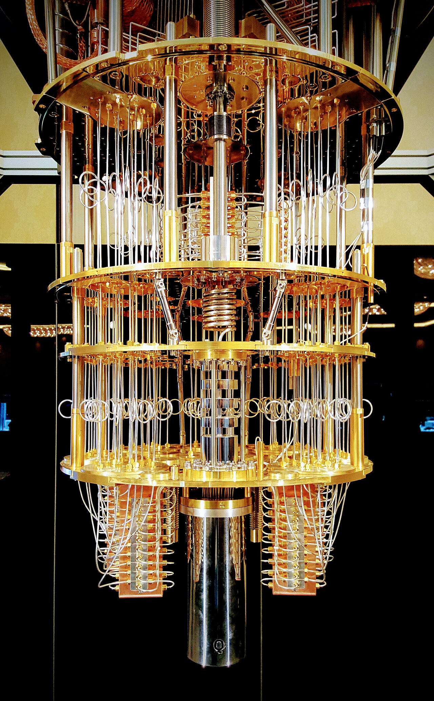
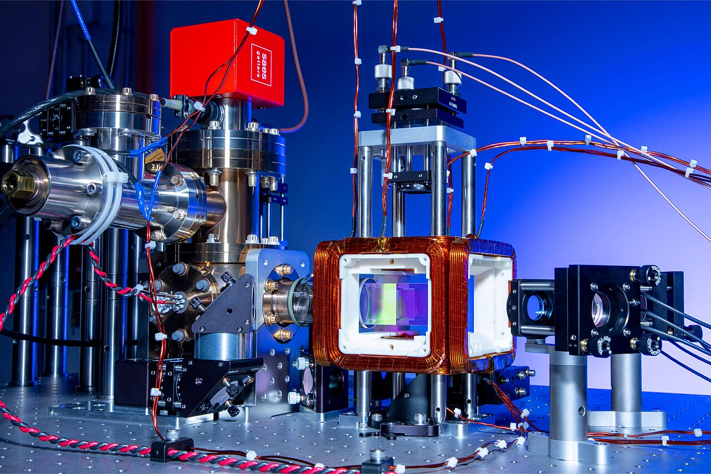
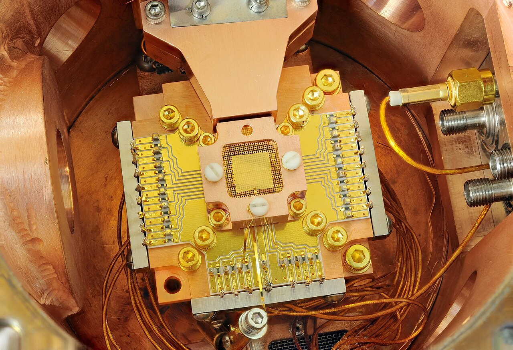

Machen wir 60 Jahre JKU messbar.
Bei uns schaust du nicht nur zu, sondern probierst selbst aus, wie ein Quantencomputer denkt – ganz ohne Vorwissen. Und halte die Augen offen: Auf diesem Plakat haben sich sieben Katzen versteckt.
-
1
Scannen
Scanne den QR-Code mit deinem Handy, und die Website öffnet sich direkt – eine App brauchst du nicht.
-
2
Wählen
Besuche die Stationen in beliebiger Reihenfolge. Ist gerade viel los, überbrückst du die Wartezeit mit einem Rätsel am Handy.
-
3
Ausprobieren
Drehe Modelle, stecke Schaltkreise und knacke Rätsel, von denen jedes mit einem vierstelligen Code endet.



Was ist ein Quantencomputer? DAS WICHTIGSTE IN KÜRZE
Rechnen mit Qubits
Ein Quantencomputer rechnet nicht mit gewöhnlichen Bits, sondern mit Qubits, und nutzt dafür die Gesetze der Quantenphysik – also jene Regeln, nach denen sich Atome und Licht verhalten. Während ein normales Bit entweder 0 oder 1 ist, kann ein Qubit beides zugleich sein. Man nennt das Superposition.
Messen und Rechnen
Misst man ein Qubit, erhält man trotzdem immer 0 oder 1. Wie wahrscheinlich welches Ergebnis ist, hängt vom Zustand ab, und nach der Messung kollabiert dieser. Gerechnet wird mit Gattern: Jedes Gatter dreht den Zustand auf der Kugel um einen vorgegebenen Winkel und damit kann man rechnen.
Verschränkung und Interferenz
Zwei Qubits können so eng zusammenhängen, dass man sie nur noch gemeinsam beschreiben kann. Das ist einer der Effekte, die wir klassisch nicht erreichen. Weil n Qubits 2n Zahlen brauchen – bei 50 Qubits schon rund eine Billiarde –, kommen normale Computer hier rasch an ihre Grenzen. Dabei probiert ein Quantencomputer nicht einfach alles gleichzeitig aus, sondern sorgt dafür, dass sich falsche Antworten gegenseitig auslöschen und richtige verstärken.
Wie baut man Qubits – und wozu?
Qubits lassen sich auf ganz unterschiedliche Arten bauen: Supraleitende Schaltkreise müssen fast bis zum absoluten Nullpunkt gekühlt werden, während Atome und Ionen mit Laserlicht festgehalten werden und manche Rechner mit einzelnen Lichtteilchen sogar bei Raumtemperatur arbeiten. Eines Tages sollen sie helfen, neue Materialien und Medikamente zu entwickeln oder schwierige Planungsaufgaben zu lösen, und auch für besonders genaue Messgeräte sind Quanten wichtig.
Wie weit sind wir?
Heutige Geräte sind noch klein und machen viele Fehler, weshalb die Fehlerkorrektur zu den großen Forschungsthemen zählt. Den PC wird ein Quantencomputer ohnehin nicht ersetzen, denn er ist nur bei bestimmten Aufgaben überlegen. Quantenphysik steckt aber längst in deinem Alltag: Laser, Computerchips und Magnetresonanz-Geräte im Krankenhaus beruhen alle darauf.
Die 4 Stationen DAS ERWARTET DICH
Schrödinger-Box
SOWOHL ALS AUCHDie Katze ist lebendig und tot zugleich – zumindest, solange niemand in die Kiste schaut.
VOR ORT Vor Ort stehen zwei Holzkisten, die mit vier Zahlenschlössern gesichert sind. Löse die Rätsel der Katze und öffne die Boxen.
AM HANDY Hier findest du die Online-Rätsel samt Erklärungen. Wenn du richtig liegst, erhältst du die Codes für die Zahlenschlösser.
Bloch-Kugel
DAS QUBITEin Bit kennt nur zwei Werte, einem Qubit steht dagegen eine ganze Kugeloberfläche offen.
VOR ORT Hier findest du Kugeln als Qubit Modelle gemeinsam mit 20 Challenges, mit denen du dich und dein Verständnis der Bloch Sphere selbst testen kannst.
AM HANDY Hier erfährst du, was ein Qubit eigentlich ist, wie die Rotationen funktionieren und kannst deine Lösungen überprüfen.
QuantumTable
SCHALTKREISE VOM SCCHDu baust einen Schaltkreis und siehst sofort, was dabei herauskommt.
VOR ORT Lege die Bausteine auf den Tisch und verbinde sie miteinander – Alex hilft dir gern beim Einstieg.
AM HANDY Online findest du Erklärungen zum Thema Quantenschaltkreise, wie man sie liest und wie sie funktionieren.
Meet the Team
MENSCHEN DER FORSCHUNGHier lernst du die Menschen kennen, die hinter der Forschung stehen.
VOR ORT Unser Team stellt sich selbst in kurzen Steckbriefen vor und erklärt, woran wir gerade arbeiten
AM HANDY Sind die Mappen vor Ort gerade besetzt, findest du alle Steckbriefe auch online.